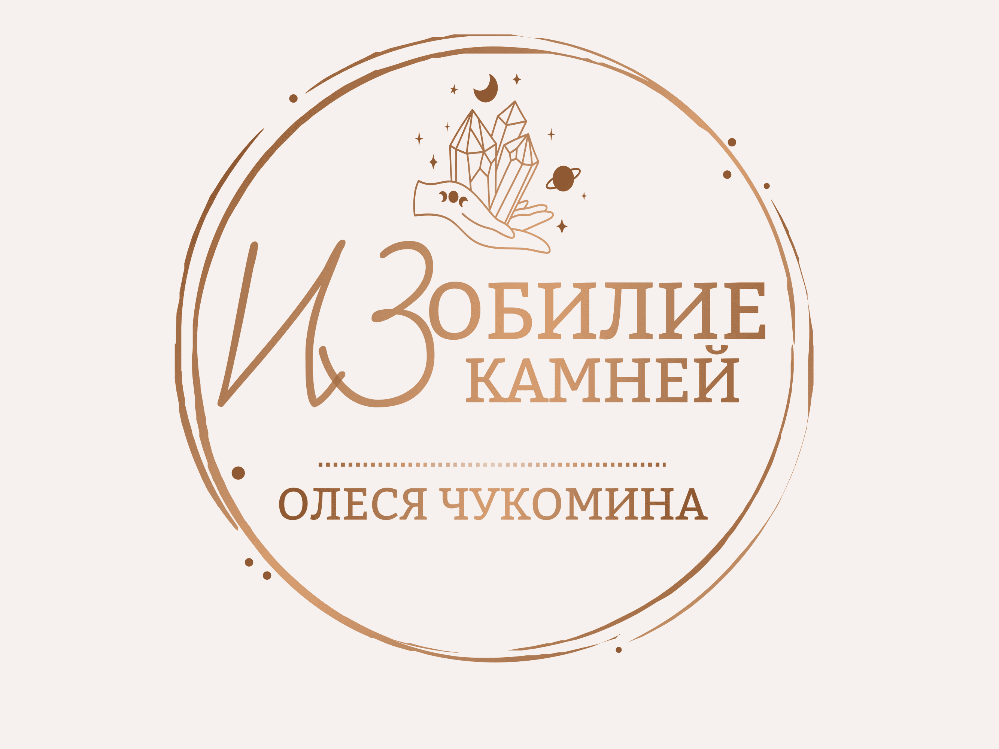
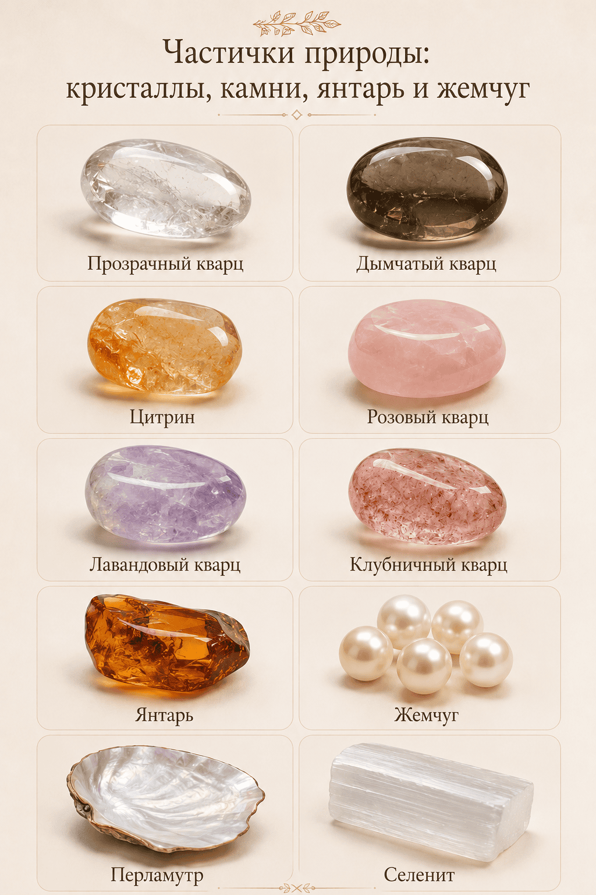
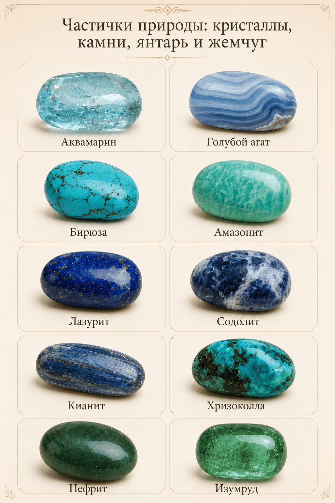
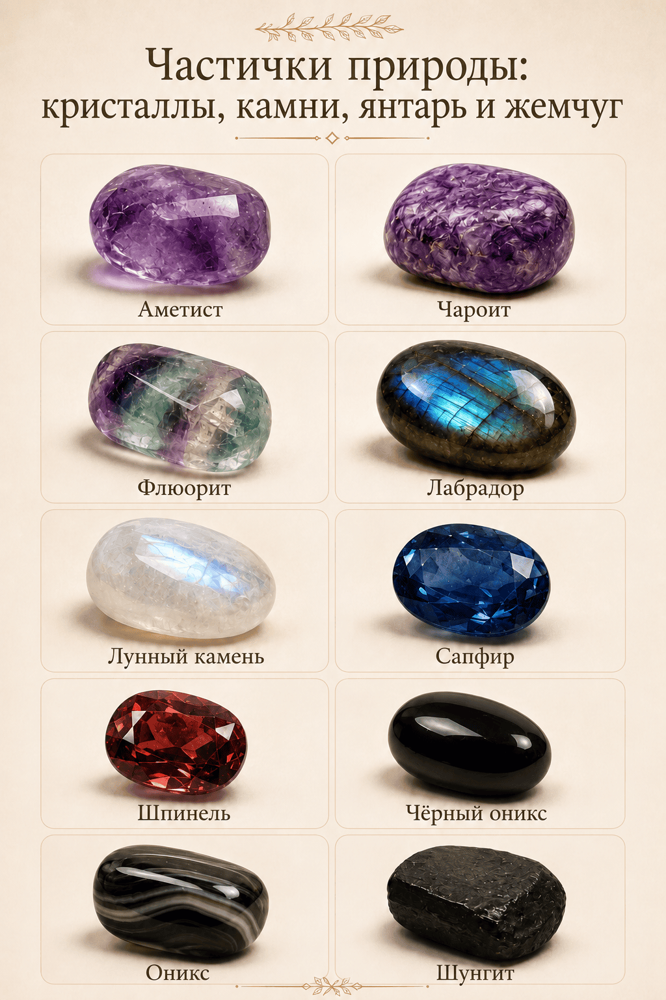
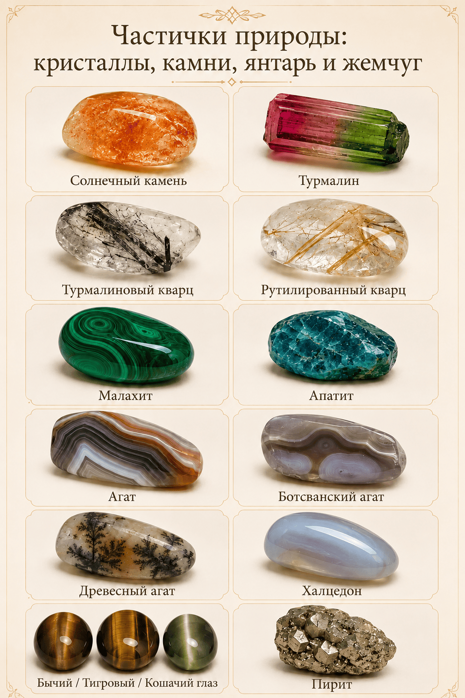
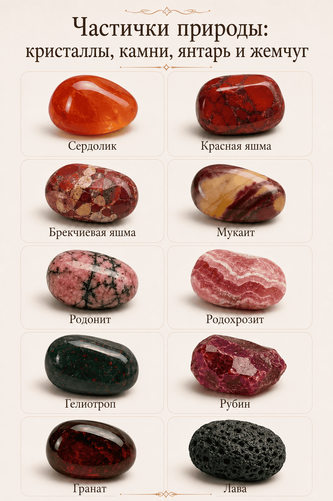

Браслеты
Браслеты из натуральных камней под размер запястья, любимые оттенки, дату рождения или личный запрос.

ИЗОБИЛИЕ ИЗ КАМНЕЙ Заказать украшениеУкрашения ручной работы из натуральных камней по дате рождения и запросам жизненных ситуаций
Приветствую Вас в моём мире тишины и силы. ✨
Рада, что наши пути пересеклись, природа сама подвела сюда, чтобы Вы могли на минуту остановиться.
Заходите, устраивайтесь поудобнее — здесь можно просто выдохнуть, побыть в тишине и почувствовать, как потихоньку становится спокойнее.
Я тут, чтобы послушать и помочь найти тот самый камень, который будет тихо шептать: „Ты справишься“.
Добро пожаловать в мой мир ИЗОБИЛИЯ ИЗ КАМНЕЙ! 💛
Меня зовут Олеся. Здесь не нужно спешить, не нужно быть «в ресурсе» или казаться сильнее, чем есть. Можно просто зайти, немного выдохнуть и почувствовать: рядом есть что‑то надёжное, спокойное, настоящее.
Сила природы — самая чистая и глубокая. Камни веками стояли в горах, встречали рассветы и грозы, хранили тишину и выдерживали бурю. В них — мощь стихий: твёрдость земли, течение воды, ясность воздуха, тепло огня. Это не мимолётная поддержка, а плотный, ощутимый ресурс.
Создаю украшения, которые становятся верными союзниками в любых жизненных ситуациях.
Форматы заказа
Можно выбрать готовое украшение из примеров, заказать похожее изделие или оформить индивидуальный подбор по дате рождения, личному запросу, цветовой гамме, размеру и назначению украшения.
Вы можете выбрать украшение из готовых работ или заказать похожее по фото. Я адаптирую размер, фурнитуру, оттенки и детали под вас.
Подходит, если:Стоимость: от 2 000 ₽
Украшение собирается под конкретного человека: по дате рождения, личному запросу, желаемой цветовой гамме, размеру, фурнитуре и назначению украшения.
Можно сделать для себя или в подарок — как красивый личный сюрприз. Я подберу камни и оттенки, которые будут откликаться именно вам или человеку, для которого создаётся украшение.
Подходит, если:Стоимость рассчитывается индивидуально
Камни
Частички природы: кристаллы, камни, янтарь и жемчуг





Один и тот же камень может отличаться по цвету, размеру, форме и оттенку. За счёт этого меняется не только внешний вид украшения, но и его настроение. Поэтому украшения по дате рождения и индивидуальному запросу собираются персонально: с учётом камней, фурнитуры, размера, цветовой гаммы и задачи, которую человек хочет вложить в изделие.
Информация о свойствах камней носит ознакомительный характер и не заменяет медицинские рекомендации.
Примеры украшений
Здесь собраны украшения, которые уже были созданы мной. Могу собрать похожее изделие, подобрать комплект или оформить индивидуальный подбор по дате рождения, цвету, размеру и личному запросу.


Тип: браслет
Камни: афганский лазурит, прозрачный кварц, горный хрусталь.
Афганский лазурит традиционно связывают с ясностью, принятием решений и внутренней уверенностью.
Детали: ювелирный трос, замок-карабин.


Тип: браслет
Камни/материалы: чёрный агат, жемчуг Майорка, гематит, фурнитура.
Элегантный браслет в контрастном сочетании чёрного агата и жемчуга Майорка. Можно носить как акцентное украшение или подобрать похожее изделие под ваш размер и пожелания.
Детали: размер, фурнитура и оттенки согласуются индивидуально.

Тип: браслет
Камни: дымчатый кварц, натуральные камни, фурнитура.
Дымчатый кварц, или раухтопаз, традиционно связывают с очищением, внутренней устойчивостью и сильной защитой. Такой браслет может стать красивым личным оберегом и спокойной опорой на каждый день.
Важная деталь: камни для защиты я подбираю индивидуально — с учётом даты рождения, личного запроса и того, что откликается именно вам.
Детали: размер, оттенки и фурнитура согласуются индивидуально.

Тип: браслет
Камни: прозрачный кварц, горный хрусталь.
Прозрачный кварц традиционно связывают с ясностью, внутренним балансом и очищением пространства вокруг себя.
Детали: размер 15 см + 4 см, бусины 10 мм.

Тип: браслет
Камни: прозрачный кварц, авантюрин тёмно-синий.
Авантюрин традиционно связывают с интеллектом, сосредоточенностью, ясностью мышления и лёгкостью во взаимодействии с другими людьми.
Детали: бусины 3 мм и 8 мм, мемори*.

Тип: браслет
Камни: зелёный кошачий глаз.
Зелёный кошачий глаз традиционно связывают с ощущением восстановления сил, расслаблением, мягким снижением напряжения и спокойным настроем перед сном.
Детали: мемори*, бусины 8 мм.

Тип: браслет
Камни: солнечный камень, лава.
Солнечный камень традиционно связывают с жизненной энергией, хорошим настроением, активностью и внутренним теплом.
Детали: бусины разноформенные 6–8 мм, мемори*.

Тип: браслет
Камни: клубничный кварц, лава.
Клубничный кварц традиционно связывают с любовью, гармонией, радостью и мягкой женственной энергией.
Детали: размер 18 см + 4 см, ювелирный трос, замок-карабин.

Тип: браслет
Камни: индийская яшма, лава, гематит.
Индийскую яшму традиционно связывают с защитой от негативной энергии и внутренней устойчивостью.
Детали: размер 15 см, бусины 8 мм, мемори*.

Тип: браслет
Камни: белый агат.
Белый агат традиционно связывают со спокойствием, мягкостью и внутренней гармонией.
Детали: размер 17 см + 4 см, бусины 8 мм, мемори*, замок-карабин.

Тип: браслет
Индивидуальный браслет с подбором камней по дате рождения, личному запросу, оттенкам и желаемому настроению украшения.
Детали: бусины 8 мм, на резинке.

Тип: браслет
Камни: флюорит, лава, нефрит, прозрачный кварц.
Украшение собрано под личный запрос — с подбором камней, оттенков и сочетаний.
Детали: бусины 8 мм, на резинке.

Тип: браслет
Камни: флюорит, сердолик, прозрачный кварц, рубин, нефрит, чароит, цитрин.
Флюорит традиционно выбирают для концентрации, ясности мыслей и работы с большим объёмом информации.
Детали: бусины 4 мм и 8 мм, на резинке.

Тип: браслет
Камни: тигровый глаз, афганский лазурит, лава.
Тигровый глаз традиционно связывают с уверенностью, защитой и силой движения вперёд.
Детали: ювелирный трос, замок-карабин.

Тип: браслет
Камни: лазурит, лава.
Лазурит традиционно связывают со спокойствием, ясностью мыслей и внутренней гармонией.
Детали: ювелирный трос, замок-карабин.

Тип: браслет
Подбор камней для тех, кто хочет почувствовать больше собранности, уверенности, движения к целям и поддержки в любимом деле.
Детали: состав зависит от выбранных камней, размера и фурнитуры.

Тип: колье
Камни: жемчуг.
Жемчуг традиционно связывают с женственностью, мягкостью, уверенностью и защитой на жизненном пути.
Детали: длина 45 см, ювелирный трос, жемчужины 6–8 мм, замок-концевик.

Тип: колье
Камни: жемчуг.
Нежное колье с замком-тогл и съёмной подвеской из барочного жемчуга. Подойдёт для образа, подарка или особого случая.
Детали: длина 40 см.

Тип: колье
Камни: индийская яшма, лава.
Украшение в природных оттенках с выразительным характером. Подойдёт как самостоятельный акцент или часть комплекта.
Детали: длина 57 см + 5 см, ювелирный трос, замок-карабин, бусины 8 мм и 4×12 мм.

Тип: колье
Камни: перламутр, лазурит.
Перламутр традиционно связывают с мягкостью, женственностью, внутренней гармонией и бережной защитой. Такое колье можно носить как нежный акцент на каждый день или как украшение с личным смыслом.
Детали: длина 50 см + 5 см, замок-карабин, подвеска-сердце из перламутра.

Тип: декоративные булавки
Камни: натуральные камни, фурнитура.
Декоративные булавки — лёгкий способ носить натуральные камни, даже если вы не любите украшения на себе. Их можно прикрепить к одежде, сумке, рюкзаку или использовать как маленький личный акцент.
Важная деталь: особенно актуально для детей — такую булавку можно добавить на рюкзак, сумку или аксессуар, чтобы камни были рядом, но не мешали в течение дня.
Детали: камни, оттенки и сочетания подбираются индивидуально.

Тип: комплект
Камни: турмалиновый кварц, прозрачный кварц, арбузный турмалин, родонит, лава, гематит.
Комплект в единой цветовой гамме. Арбузный турмалин традиционно связывают с гармонией, мягкостью и внутренним балансом.
Детали: браслет — размер 15 см, бусины 8–10 мм, галтовка, мемори*. Колье — 43–45 см, бусины 8–10 мм, мемори*.

Тип: серьги
Аккуратные серьги из натуральных материалов и фурнитуры. Можно подобрать под колье, браслет или собрать комплект в едином стиле.
Все украшения можно повторить в похожем стиле, но точное совпадение оттенков и рисунка камней не всегда возможно: натуральные камни отличаются по цвету, форме, размеру и внутреннему рисунку.
Если вы не знаете, какое украшение выбрать, оставьте заявку и напишите желаемый цвет, повод, размер и для кого изделие — для себя или в подарок. Я подскажу лучший вариант именно для вашего случая.
Пояснение
Мемори* — это проволока с памятью формы. Она сохраняет заданную форму и возвращается к ней после растяжения или скручивания. Благодаря жёсткой основе браслет часто не требует замка или застёжки — он просто надевается на руку. По такому же принципу может носиться и колье.
Стоимость
Стоимость готовых изделий указана в канале с учётом доставки Яндексом до пункта выдачи по РФ.
Для индивидуального подбора стоимость согласуется отдельно после обсуждения камней, размера, фурнитуры и пожеланий.
Размер
Чтобы украшение красиво сидело и было комфортным, выберите подходящий размер для браслета или колье.
Измерьте обхват запястья сантиметровой лентой без запаса. При сборке добавлю небольшую прибавку на комфортную посадку.
Для колье можно выбрать длину 40 см, 45 см или 50 см. Если вы не уверены, какой вариант подойдёт лучше, я подскажу по посадке, образу и типу украшения.
Рекомендации
Чтобы украшения дольше сохраняли красоту, блеск и аккуратный вид, важно бережно обращаться с натуральными камнями, жемчугом и фурнитурой.
Снимайте украшения перед душем, баней, бассейном и мытьём рук.
Наносите духи, кремы и масла до того, как надеть украшение.
Лучше хранить украшения в мешочке, коробочке или отдельном отделении, чтобы камни и фурнитура не царапались.
Во время сна изделие может деформироваться, зацепиться или потерять форму.
После носки можно аккуратно протереть украшение мягкой салфеткой без агрессивной химии.
Камни могут отличаться по оттенку, форме и рисунку — это естественная особенность натуральных материалов.
Заказ
Заполните форму заявки на сайте: укажите имя, контакт для связи, тип украшения, размер, цветовую гамму и пожелания.
Если украшение нужно подобрать по дате рождения, укажите дату в заявке. Браслет или другое украшение можно сделать и как сюрприз — я подберу камни и оттенки, которые будут откликаться именно для вас или для человека, которому предназначен подарок.
Также можно написать, для какой жизненной ситуации нужна поддержка: спокойствие, защита, уверенность, энергия, гармония или особый повод.
Я уточню детали, помогу с выбором камней, оттенков, фурнитуры и формата украшения.
До начала работы я согласую с вами стоимость, срок изготовления и итоговый вариант украшения.
После согласования я отправлю удобную ссылку для оплаты. Данные банковских карт на сайте не вводятся.
Готовое украшение бережно упакую и отправлю Яндекс Доставкой. Стоимость доставки рассчитывается отдельно и зависит от адреса получателя.
После отправки вы получите трек/информацию для отслеживания и сможете забрать своё украшение удобным способом.
Пусть украшение каждый день напоминает: вы не одни, у вас есть сила, а природа готова делиться своей мощью, чтобы вам было светлее и спокойнее.
Индивидуальный заказ
Расскажите, какое украшение хотите, а я подскажу по камням, размеру и деталям.
Контакты
Напишите мне в Telegram, чтобы уточнить наличие, подобрать камни или заказать украшение по индивидуальному запросу.
Подписывайтесь на канал в MAX — там новости, примеры украшений и обновления.